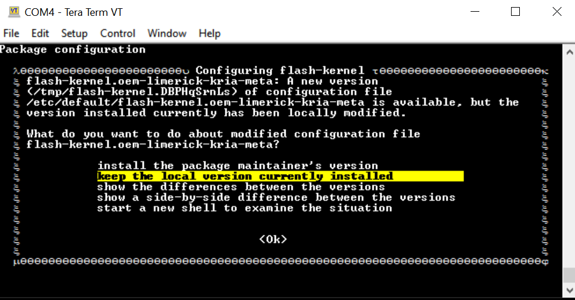

Booting Kria Starter Kit Linux on KD240¶
Introduction¶
This document shows how to boot the Kria Starter Kit Linux on KD240 and perform common one-time updates and installations required prior to running any AMD-released KD240 application in Linux. This targets booting Ubuntu® 22.04.
Boot Process¶
Flash the Kria Starter Kit Linux image into the SD card (minimum 16 GB).
Refer to the KD240 Getting Started Page to flash the SD card with an Ubuntu 22.04 image.
You can reuse the same SD card to evaluate all the applications released for Ubuntu 22.04.
Set up the hardware. Each application will require a different set of peripherals; the following list shows the minimum required to boot Linux.

microSD:
Insert the SD card into the slot at J11.
UART/JTAG interface:
For interacting and seeing boot-time information, connect a USB debugger to J4. Some applications only run through commands issued through the universal asynchronous receiver-transmitter (UART) interface.
Network connection:
Connect the Ethernet cable from J24 to your local network with DHCP enabled to install the Linux packages.
NOTE: The image recovery app requires J24.
Ensure that the Starter Kit Boot firmware is up to date.
The SOM Starter Kits have factory preprogrammed boot firmware that is installed and maintained in the SOM QSPI device. Update the boot firmware in the SOM QSPI device to the
2022.1 Boot FWImage.See the Kria Wiki to obtain boot firmware binary and instructions to update QSPI image using xmutil, after the Linux boot.
The QSPI image update persists through power cycles or SD card changes.
Boot Linux on your Starter Kit (Ubuntu) following the instruction from this page.
If not done so yet, perform a system update to pull in the latest kernel and AMD packages. There might be some errors during installation. If you encounter issues, refer to Known Issues. There are two ways to do this.
Through snap install, for more information, refer to the Xilinx config snap Wiki:
sudo snap install xlnx-config --classic --channel=2.x
After xlnx-config snap has been installed, run the Xilinx platform setup script, and follow the prompts.
sudo xlnx-config.sysinit
Alternatively, the above can be achieved by manually adding the AMD-specific Ubuntu PPAs, and then performing a system update and upgrade to pull in the latest AMD libraries. An apt upgrade step might take some time.
sudo add-apt-repository ppa:xilinx-apps sudo add-apt-repository ppa:ubuntu-xilinx/sdk sudo apt update sudo apt upgrade
NOTE: If the kernel was updated, make sure to follow the apt upgrade instruction (and command such as
sudo reboot) to reboot the platform to boot with the latest kernel.Some Ubuntu 22.04 applications are deployed as Docker containers. Follow the instructions from docker.com to install Docker.
Enable the user to properly use the Docker commands without using sudo for every Docker command.
sudo groupadd docker sudo usermod -a -G docker $USERThis is only needed to be done once if reusing the same SD card for running multiple applications.
This flow is only needed to be done once if reusing the same SD card for multiple applications. However, you can choose to update and upgrade again to install newly available updates that are made available later.
Known Issues¶
Sometimes, Ubuntu has a background process ongoing by the time it boots to command prompt and does not yet ask you to change the password. In such cases, doing a snap install might result in a message similar to the following:
error: too early for operation, device not yet seeded or device model not acknowledgedTry again in a minute or two, and you should be prompted to update the password and above error should disappear.
If a prompt similar to the following appears:

Choose keep the local version currently installed. For more details, refer to this wiki page.
During the
sudo xlnx-config.sysinitorsudo apt upgradecommands, you might see the following errors and exit installation. Rerun the commands, and the installation should continue and complete.flash-kernel: deferring update (trigger activated) /etc/kernel/postinst.d/zz-flash-kernel: flash-kernel: deferring update (trigger activated) Errors were encountered while processing: flash-kernel need restart is being skipped since dpkg has failed E: Sub-process /usr/bin/dpkg returned an error code (1)
Miscellaneous Information¶
The ubuntu user does not have root privileges. Most commands used in the tutorials must be run using sudo, and you might be prompted to enter your password.
For security, by default, the root user is disabled. If you want to login as a root user, perform the following steps. Use the ubuntu user’s password on the first password prompt, then set a new password for the root user. You can now login as a root user using the newly set root user password.
ubuntu@kria:\~\$ sudo -i
sudo\] password for ubuntu:
root@kria:\~#
If needed, the following commands are used to set the System Timezone and locale:
Set timezone:
sudo timedatectl set-ntp true sudo timedatectl set-timezone America/Los_Angeles timedatectlSet locale:
sudo locale-gen en_US en_US.UTF-8 sudo update-locale LC_ALL=en_US.UTF-8 LANG=en_US.UTF-8 export LANG=en_US.UTF-8 locale
The following example command sets the date and time:
sudo date --set "11 January 2023 16:47:00"
The storage volume on the SD card can be limited with multiple Dockers. If there are space issues, use the following command to remove the existing container.
sudo docker rmi --force $INSTALLED_DOCKER_IMAGE
Copyright© 2023 Advanced Micro Devices, Inc